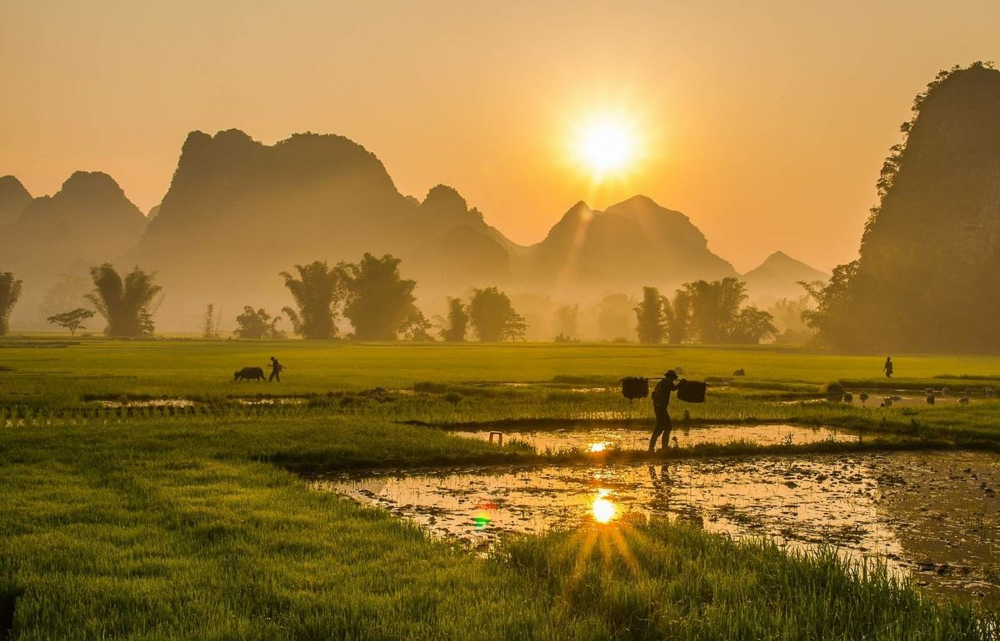
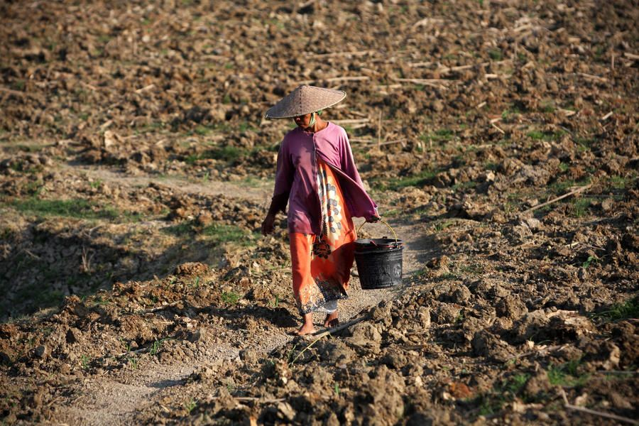
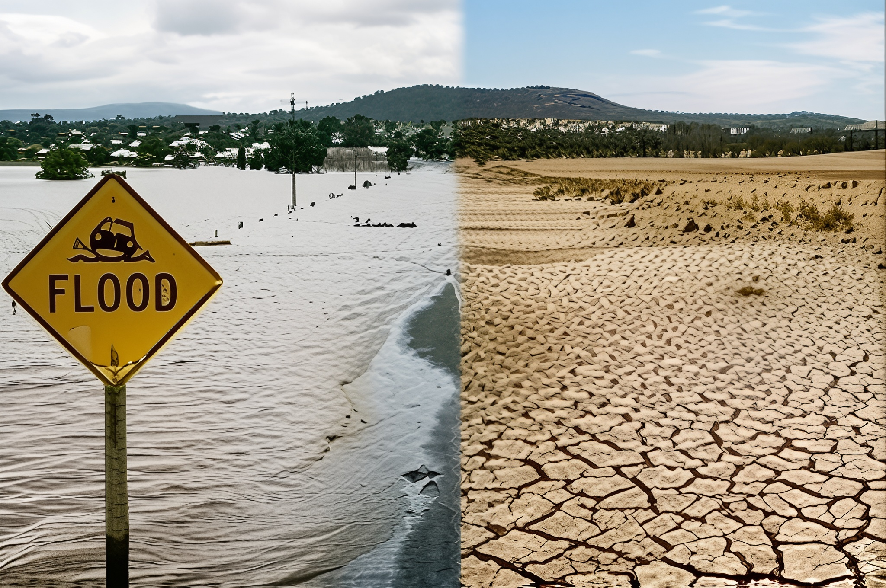
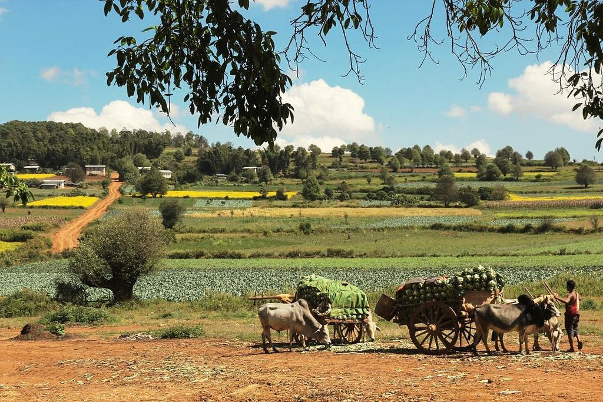
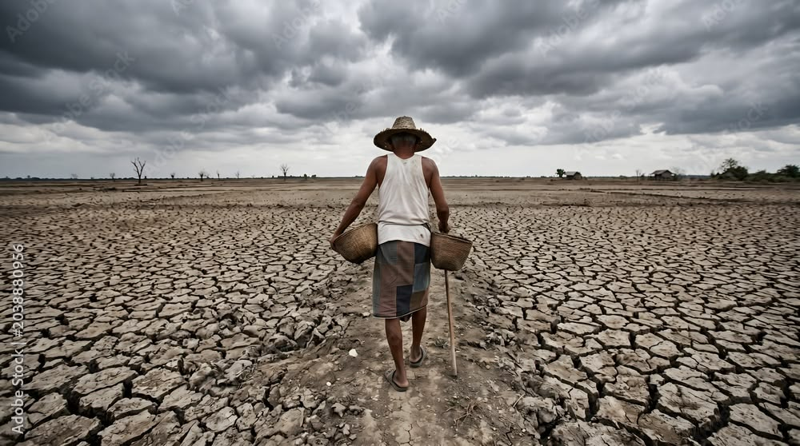

Understanding heatwaves today is an important step towards protecting our crops, supporting farmers, and building a more resilient future for Central Myanmar.
Explore the Impacts
A heatwave is a prolonged period of excessively hot weather, which may be accompanied by high humidity. These events are caused by a combination of meteorological factors, including high-pressure systems, atmospheric circulation patterns, and climate change.
Its duration and intensity can vary depending on the region and the criteria used to define it. Heatwaves can affect human health, increase water demand, and place stress on agricultural crops.

El Niño is a climate phenomenon involving unusually warm sea surface temperatures in the central and eastern equatorial Pacific Ocean.
It is part of the El Niño Southern Oscillation (ENSO), which influences weather patterns around the world. Its effects vary by region and season, potentially changing rainfall patterns and temperature conditions.

El Niño can influence atmospheric circulation, which affects the distribution of rainfall and temperature in different parts of the world. In some regions, it is associated with hotter or drier conditions, although its effects are not the same everywhere.
Understanding this relationship helps explain why some periods may bring additional challenges for farming and water management in Myanmar.

Central Myanmar has areas with a relatively dry climate, high temperatures, and seasonal rainfall. These conditions can make agricultural activities sensitive to changes in rainfall, soil moisture, and extreme heat.
During particularly hot periods, limited water availability can increase the difficulty of maintaining healthy crops. The extent of these effects depends on local conditions and the timing of rainfall.

Although heatwaves and droughts can occur together, they are different events. A heatwave involves unusually high temperatures over a period of time, whereas a drought involves a prolonged shortage of water, often due to below-normal precipitation.
Heat can increase evaporation and plant water loss, potentially worsening drought conditions. However, a heatwave does not automatically mean a drought is occurring.
Heatwaves can develop when weather patterns allow hot conditions to persist over an area. Clear skies, strong incoming sunlight, dry soil, and persistent high-pressure systems can contribute to extreme heat in certain situations.
Prolonged heat can increase water demand, damage sensitive crops, reduce agricultural productivity, and increase health risks for people working outdoors. The severity of these impacts depends on the intensity and duration of the heatwave, water availability, and the ability of communities to adapt.